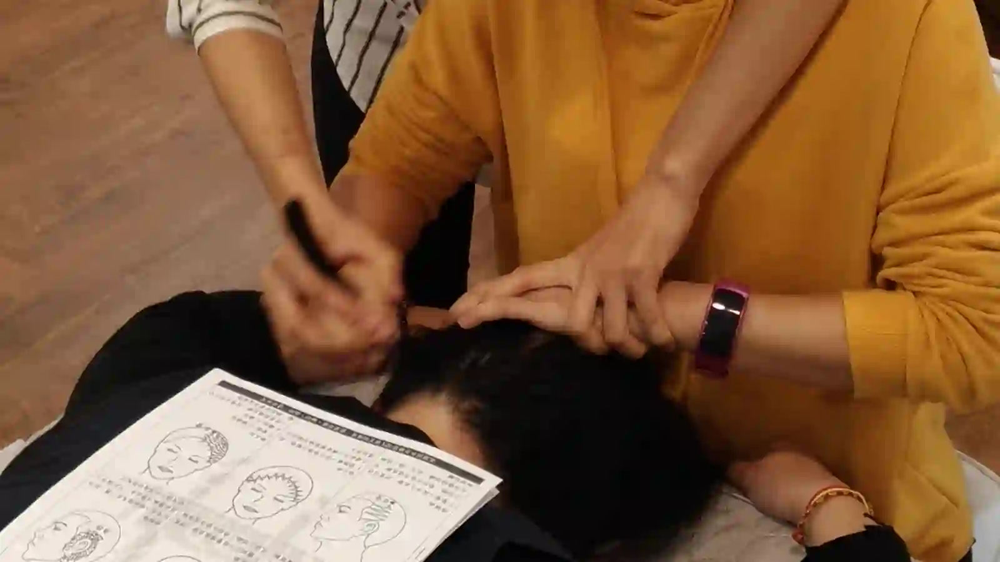

The Bojin Journal · Cheeks & Smile Lines
A Dimpled, Pebbly Chin? The Small Muscle Behind It

You've seen it in a photograph, or caught it in the bathroom mirror at the wrong angle: the skin on your chin looking faintly bumpy, like the surface of an orange peel or a golf ball. It shows up more when you're concentrating, and more still when you're trying not to cry.
A Taiwan-based teacher on the mentalis muscle behind a pebbly chin, why it lingers after 50, and gentle, precise work for the resting state. Remember: this is a gentle, supported self-care observation you can test on one side of your face—never a forceful press or medical treatment.
Almost nobody talks about the chin. It gets grouped in with the jawline or ignored entirely, and women who notice this texture often assume it's a skin problem and start buying the wrong products for it.
Why the chin puckers
There's a small muscle sitting right at the point of your chin called the mentalis. Its job is to push the middle of your lower lip up and out, which is the movement behind a pout, a pursed expression, and the face you make when you're holding something back.
When that muscle contracts, it tugs the skin over it into small dimples. That's the pebbly texture, and it's a muscle doing what muscles do, not a flaw in your skin. What changes with age is how easily it stays that way. Decades of holding tension there, plus skin that's thinner and less springy than it was, means the puckering that used to smooth out immediately now lingers.
Two other things feed it. If you clench your jaw, the mentalis often clenches along with it. And if you carry tension in your mouth generally, that small muscle is usually part of the pattern.
What bojin can and can't do here
Honest first. If your chin only looks pebbly when you actively purse your lips, that's normal muscle movement and there's nothing to fix. What can improve is the resting state: a mentalis that has learned to stay slightly contracted all day, and the tight, unmoving skin over it.
Pebbling during an expression is normal muscle movement. What can improve is the resting state: a mentalis that's learned to stay slightly contracted all day.

Gentle, precise work on that small area can ease the holding pattern so the chin sits softer at rest, and improve how the skin over it moves. That effect is gentle and temporary, and it builds with consistency. What it won't do is smooth a chin that's dimpling because you're mid-expression, or replace what a professional treatment does for the muscle itself.
The chin is a small target, which is why the rounded tip of a stainless steel bojin stick suits it. A broad edge skates over the area without settling into the small, specific spot that's actually holding.
The 5 steps for a tight chin

Notice the resting position first.
Relax your face completely and look. If the pebbling is there when you're not making any expression, that's the thing to work on.
Add slip and warm the lower face.
Flat, gliding passes across the chin and along the jaw, warming before anything specific.
Work the point of the chin with the rounded tip.
Small, slow movements right at the chin's center and just below the lower lip, comfortable pressure. This spot is often surprisingly tender.
Sweep outward along the jaw.
From the chin out toward each ear, several slow passes, connecting the chin to the jaw work you already do.
Finish down the neck.
Down from the jaw along the neck, as always.
Then let your lower lip go completely slack for a few seconds. That release is half the point.
Honest expectations, and a safety note
Expect a chin that feels softer and looks a little smoother at rest, gently and temporarily. Don't expect a permanent change in texture, and be skeptical of anything promising one. If the pebbling bothers you enough to want a lasting change, that's a conversation for a dermatologist or an injector, and bojin sits alongside that, not instead of it.
For the next few days, notice where your lower lip is when you're concentrating. If it's pushed up and tight, let it drop. Most of the holding happens without you ever deciding to.
Quick answers
What causes a dimpled or pebbly chin?
A small muscle at the point of the chin called the mentalis. When it contracts it tugs the skin into small dimples, and with thinner, less springy skin that puckering lingers longer.
Is it a skin problem or a muscle problem?
A muscle one. It isn't a flaw in your skin, which is why skincare products aimed at texture usually disappoint here.
Can bojin smooth my chin permanently?
No. The effect is gentle and temporary and works on the resting state. For a lasting change, that's a conversation for a dermatologist or injector.
Which part of the tool works on the chin?
The rounded tip. The chin is a small target and a broad edge skates over the specific spot that's holding.
Want to see the chin technique up close?
My free 3-minute video shows exactly where on the chin to work and how light the pressure should be.
Watch the free 3-min videoYu-Ting Lan is a Taiwan-based international bojin instructor and the founder of Héhé Studio. She has taught her bojin method to more than a thousand students, from complete beginners to grandmothers, across Taiwan, Hong Kong, and Malaysia.